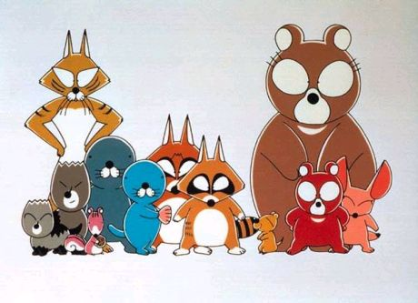

안녕하세요! 여기는 테스트 페이지 입니다.
아기해달 보노보노
1986년부터 연재가 시작된 장수 4컷만화.[1] 1995년에 4쿨짜리 TV 애니메이션화되었다.
국내에서는 원작이 1995년 서울문화사에서 라이선스화되었고 애니메이션은 1996년에 투니버스를 통해 처음 방송을 하였고 이후 SBS등의 공중파 채널에서도 방송되었다. 만화는 너무 오래 전에 나와서 한 때 구하기 힘들었지만 재판되었다. 2012년 9월 현재 26권까지 정발중. 원작은 2014년 현재 39권까지 나와있다.
강렬하진 않지만 적절하게 터지는 개그센스와 귀여운 캐릭터, 더불어 더빙판 성우진의 강렬한 싱크로 덕분에 남녀 모두에게 인기가 있다.
원작 만화에서는 철학적인 내용을 다루기도 한다. 생각보다 심오한 편...이라기보다는 원작은 아동만화가 아니다. 확실히 어른용.
특히 국내 성우진은 원판과 비교해도 손색이 없을 정도. 그 인기 덕택에 일어판 보노보노는 왠지 어색하다는 사람까지 나왔고, 결국 극장판도 한국어 더빙판이 나왔다. 하지만 보노보노의 목소리가 너무 똘망똘망하게 들리는 것이(원래 더 어벙하고 기운빠진 목소리여야 한다.), 녹음한지 오래되어 성우의 감이 약간 떨어진 게 아닌가로 보인다.(그외 성우들도 예전이랑 좀 느낌이 달라졌다.) 여담으로 캐릭터들의 개명 센스(?)도 가히 초월급.
